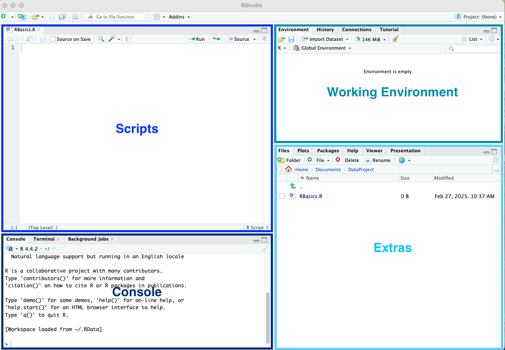
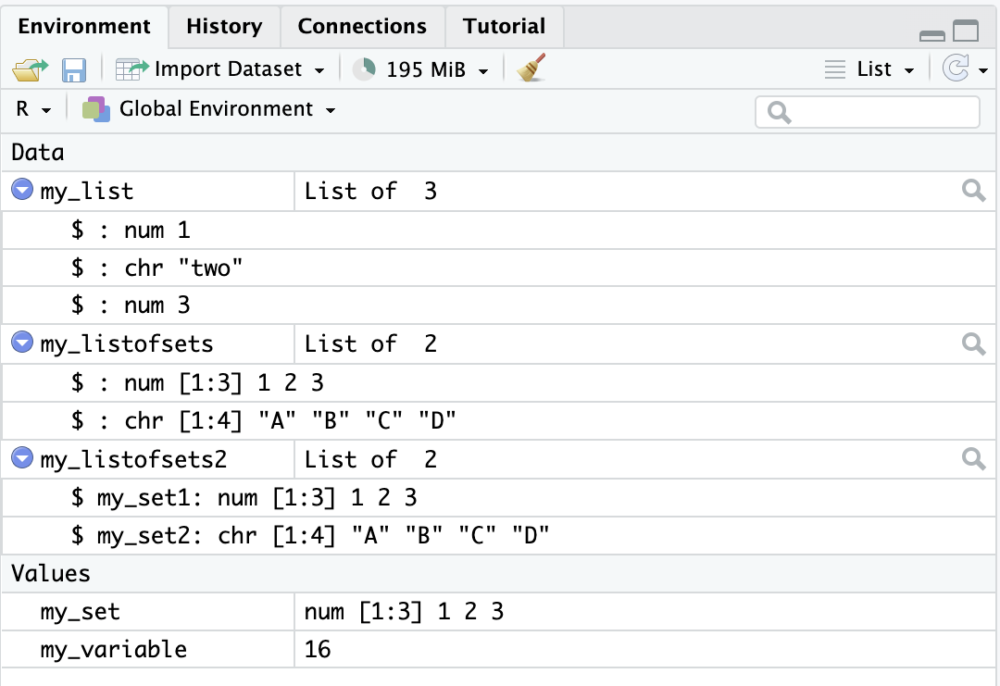

An Introduction to R#
R is a language and environment for statistical computing and graphics. You can read more about it here.
In this Notebook we will point out some useful basics of R to help you get started. If you want to learn more then there are a variety of resourses listed in the references section.
We will be assuming you are following along using RStudio, but you can also interact with the code by clicking the rocket launch button to open this is Google Colab.
To get started (having downloaded R and RStudio) open up RStudio and open a new R Script (e.g. File->New File->R Script) and save it (e.g. as RBasics.R).
Getting to know R/RStudio#
When you are working in R Studio you should see that the window is split into four panels. Commonly this will be:
top left - any current script(s) (e.g. our RBasics.R script)
bottom left - a console for experimental commands and any R output
top right - the working environment with any saved variables or data structures
bottom right - extras such as a files tab and R Help

The Console#
If you want to test out a line of code (commands) you can run it in the console before copying it to your script. Some useful features:
You can use your keyboards up/down arrows to scroll back through previous commands.
You can use
^Rto search your command history.You can clear the console using
^L.
Tip
You can also use the console to access R’s help guides (which will appear in the bottom right panel).
You can search R’s documentation for a keyword by typing ??keyword. You can get help on a particular function or package by typing ?function.
# asking R to search its documentation for the keyword "mean"
??mean
# asking R to provide help on the function mean
?mean
Preamble#
Our script is where we will write and execute our code. Lets start our script RBasics.R by adding some preamble.
In RStudio you can create (collapsible) sections to keep your code organised. To create a section in R Studio go to Code->Insert Section, a pop up box will appear for you to name your section. We will start by creating a section called “Preamble”. Once you click ok you should get something that looks like this:
# Preamble ----------------------------------------------------------------
Tip
The symbol # is used to indicate a comment in R. This is a line which R will skip over and not try to run as code. The best codes are well commented, so feel free to add your own comments to your code to help you understand it.
Documentation#
You may wish to start your code with some documentation. This could look something like:
# Author: [Your Name]
# Date: [Date]
# Description: [Brief description of what the script does]
Install/Load Packages#
Next you will need to install/load packages. We install packages in R once. We load packages we are going to use everytime we open/start R.
# Install your packages (first use only)
# install.packages("tidyverse")
# Load your packages (everytime you restart R)
library(tidyverse)
── Attaching core tidyverse packages ───────────────────────────────────────────────────────────────────────────────────────────────────────────────────────── tidyverse 2.0.0 ──
✔ dplyr 1.1.4 ✔ readr 2.1.5
✔ forcats 1.0.0 ✔ stringr 1.5.1
✔ ggplot2 3.5.1 ✔ tibble 3.2.1
✔ lubridate 1.9.4 ✔ tidyr 1.3.1
✔ purrr 1.0.4
── Conflicts ─────────────────────────────────────────────────────────────────────────────────────────────────────────────────────────────────────────── tidyverse_conflicts() ──
✖ dplyr::filter() masks stats::filter()
✖ dplyr::lag() masks stats::lag()
ℹ Use the conflicted package (<http://conflicted.r-lib.org/>) to force all conflicts to become errors
Tip
There are thousands of R packages many of which you will never use and a handful of which you will use all the time. We will try to point you to the most relevant but you will also find more information in the references section.
Clear R Environment#
A common line you will often see in the Preamble of R codes is one which will clear the current workspace/environment.
# Clear everything from the environment
rm(list = ls())
Caution
This will delete/unassign all of the varaibles and data structures you have created so only use it if you wont lose something from the environment you will need.
Set Working Directory#
It may keep things streamlined if you set the path to your preferred working directory. Imagine you have a folder called DataProject sitting in your Documents folder. By setting the path to point to that folder automatically means that inputs will be taken from this folder and outputs will be put there.
# Set working directory using setwd("path/to/your/directory")
# setwd("~/Documents/DataProject")
Basic Operations and Print Statements#
Lets set up another section within our R script and call it The Basics
# The Basics --------------------------------------------------------------
Basic Operations#
Let’s have a play with some very basic functions. Most of these are unremarkable:
to add numbers use
+to subtract numbers use
-to multiply numbers use
*to divide numbers use
/to find powers use
^to calculate the square root use
sqrt()to calculate the sum use
sum()to calculate the mean use
mean()to round numbers use
round()
There are many other simple functions such as the exponential function exp() and the natural logarithmic function log().
# a simple mathematical calculation using basic operations
1+2*2+3^2-4/2-sqrt(4)
Note
R, like most coding languages, follows the traditional mathematical rules of precedence, which are the same as BIDMAS.
Print Statements#
Print statements, like comments, are very useful when coding. Although you can make use of the simple print function print, we would recommend the concatenate and print function cat. Here’s how it works:
# an example of a simple print statement in R
cat("The sum of the first ten numbers is:", sum(1:10), "\n")
The sum of the first ten numbers is: 55
Anything you want R to print verbatim you put inside “” and anything else must either be an object or some function or operation which R can carry out. The final “\n” tells are to start a new line on ending the statement.
Objects in R#
Assigning Objects#
Objects in R are essentially containers. They may contain single peices of data (e.g. a variable) or be more complex structures of data (e.g. lists and data frames). Objects are created by assigning the data to that object using <-.
Note
There are actually no less than five different assignment operators as per this documentation. However, at a basic level using <- will serve you well.
Lets set up a section called Objects in R and look at some examples.
# Objects in R ------------------------------------------------------------
# assign the value 16 to the object my_variable
my_variable<-16
# assign a set of values {1,2,3} to the object my_set
my_set<-c(1,2,3)
# assign a set of values {1,2,3} to the object my_list
my_list<-list(1,2,3)
# assign a set of sets {1,2,3} and {"A", "B", "C", "D"} to the object my_listofsets(2)
my_listofsets<-list(c(1,2,3),c("A","B","C","D"))
my_listofsets2<-list(my_set1=c(1,2,3),my_set2=c("A","B","C","D"))
# assign a table of data to the object my_dataframe
my_dataframe<-data.frame(my_column1=c(1,2,3), my_column2=c("yes","no","maybe"))
After doing this our environment panel should look like this:

Alternatively you can get R to list all the currently assigned objects using ls(). We saw above that rm(list = ls()) will remove (and de-assign) all of the objects in the current session. You can remove/deassign individual objects using, for example, rm(my_variable).
Looking at the environment panel we first note the difference between my_set and my_list. We can explore the difference by trying to calculate the mean of each:
# calculating the mean of the values given by my_set
mean(my_set)
# attempting to calculate the mean of the values given by my_list
mean(my_list)
Warning message in mean.default(my_list):
“argument is not numeric or logical: returning NA”
Second we note the difference between my_listofsets and my_listofsets2. The following helps us to explore the differences:
# attempting to calculate the mean of the values given by my_listofsets
mean(my_listofsets)
# attempting to calculate the mean of the values given by my_listofsets2
mean(my_listofsets2)
# calculating the mean of the values given by the first set within my_listofsets2
mean(my_listofsets2$my_set1)
# attempting to calculate the mean of the values given by the second set within my_listofsets2
mean(my_listofsets2$my_set2)
Warning message in mean.default(my_listofsets):
“argument is not numeric or logical: returning NA”
Warning message in mean.default(my_listofsets2):
“argument is not numeric or logical: returning NA”
Warning message in mean.default(my_listofsets2$my_set2):
“argument is not numeric or logical: returning NA”
Note
A list can contain sets of different length as we can see above. In a dataframe every column must have the same length.
#attempting to create a dataframe with different length columns
my_dataframe<-data.frame(my_column1=c(1,2,3), my_column2=c("A","B","C","D"))
Error in data.frame(my_column1 = c(1, 2, 3), my_column2 = c("A", "B", : arguments imply differing number of rows: 3, 4
Traceback:
1. stop(gettextf("arguments imply differing number of rows: %s",
. paste(unique(nrows), collapse = ", ")), domain = NA)
2. .handleSimpleError(function (cnd)
. {
. watcher$capture_plot_and_output()
. cnd <- sanitize_call(cnd)
. watcher$push(cnd)
. switch(on_error, continue = invokeRestart("eval_continue"),
. stop = invokeRestart("eval_stop"), error = NULL)
. }, "arguments imply differing number of rows: 3, 4", base::quote(data.frame(my_column1 = c(1,
. 2, 3), my_column2 = c("A", "B", "C", "D"))))